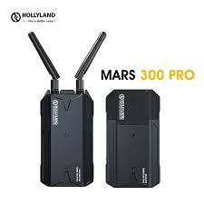

איך לנשום בלי להיבהל?
דבר ראשון תסתכל לשמיים ותגיד תודה שאתה רואה משהו. יש אנשים שלא רואים בחיים! דבר שני תעצום עיניים עם מגבת, ותחפש מים...

טיפ הישרדות: קח נשימה עמוקה ואל תיכנס לפאניקה!
מה שזז ואסור לאכול!
שיים לב שככל הנראה יש בעלי חיים על מאדים יש שם בעלי חיים בלי פרווה מכוערים ההמלצה שלנו היא לאכול רק מה שמאושר על ידי משרד הבריאות גם אם אתה עומד למות ורעב

טיפ הישרדות: אל תאכל את זה!
ידעתם שבמאדים ממש קר?
הטמפרטורות במאדים מגיעות ל -125 מעלות צלזיוס, זה ממש קר בניגוד לכך שחושבים שחם שם... החייזר אמר שלחפור בור באדמה ולהיכנס אליו עד שיגיע אמצע היום זה הכי בטוח
טיפ הישרדות: תקנה גם שמיכת פוך!
מה קורה אם נתקעים מחוץ לתחנת חלל?
בנעלי הירח שלך יש מפתח צינורות מפלדה. אם תפרק את הידית שלו, יש שם מפתח סודי של הדלק לחירום בלבד, תשתמש בו.
טיפ הישרדות: תפעל בשכל ואל תצא מאודה!
מחושים של חייזר או wifi?
אם קורה וה wifi שלך מתחבר לחייזר מאגף התחזוקה, אז זו בעיה ממש חמודה, כנראה נגמרת לך הסוללה במכשיר.

טיפ הישרדות: תדאג להטעין כל ערב !